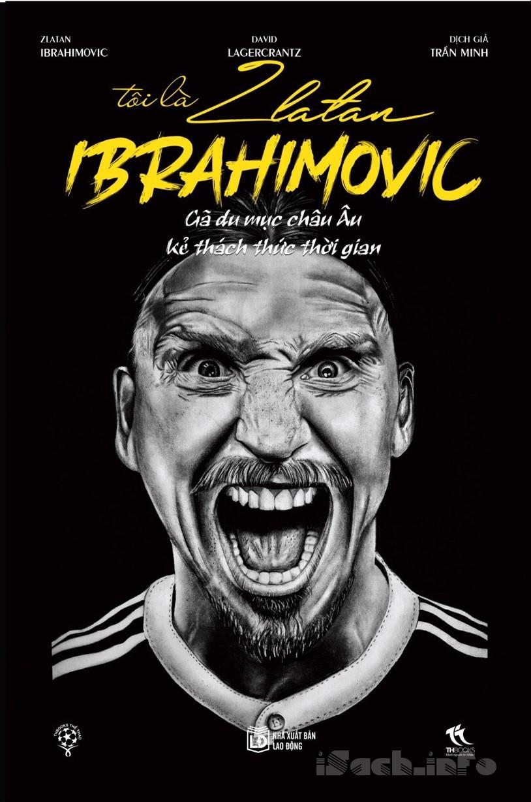

« Back
Tôi Là Zlatan Ibrahimovic
By David Lagercrantz, Z.Ibrahimovic

1.
2.Ibra & Chiến Tranh Lạnh Với Gã Guardiola "Rác Rưởi".
3.Ăn Trộm, Nghịch Phá & Những Sóng Gió Tuổi Thơ.
4."Chết Tiệt, Thằng Khốn Xỏ Mũi Con Rồi".
5.Bước Ngoặt Đến Từ "Mối Liên Hệ Với Mafia".
6.Đứa Con Ngạo Mạn Của Chúa Trời.
7."Nói Lần Nữa Là Tao Bẻ Gãy Cả 2 Chân".
8.Vào Tay Cáo Già Capello, Gà Non Biến Thành Sát Thủ.
9.Những Ngày Tháng Cuối Cùng Tại Juventus.
10.Dùng Chiêu Berlusconi Để Kiếm Bẫm Của Moratti.
11.Khởi Đầu Như Mơ Tại Inter:Dẹp Bè Phái, Làm Cha Và Tình Yêu Từ Ultras.
12.Mua Thiên Đường Bằng Đôi Chân Đầy Sẹo.
13.Tiền Nhiều, Danh Lớn & Nỗi Đau Vắt Chanh Bỏ Vỏ.
14.Sẵn Sàng Thiêu Thân Vì "Đại Ca" Mourinho.
15.Thèm Khát Champions League Và Phản Bội Inter.
16.Thách Thức Lũ Ultra, Dằn Mặt Trẻ Trâu Để Thành Vua.
17.Cơn Thèm Khát Barca:20 Phút Dài Như Thế Kỷ.
18.Lời Răn Đe Định Mệnh Của Mourinho.
19.Hoang Mang Trong Ngôi Trường Của Đám Trò Ngoan.
20.Đòn Thù Hèn Hạ Của "Con Đàn Bà" Guardiola.
21.Uất Hận Với Kẻ Giết Chết Giấc Mơ.
22.Trở Về Milan, Ibra Oách Như Tổng Thống Obama.